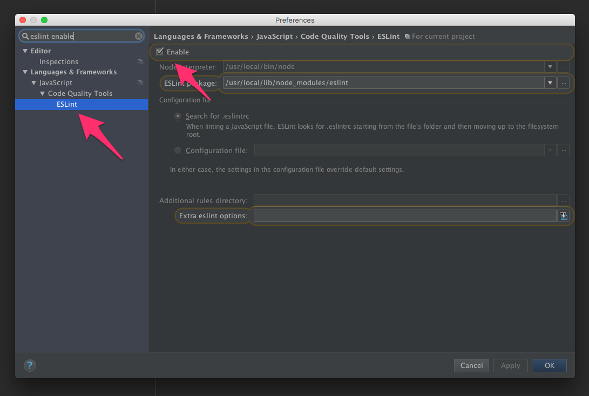
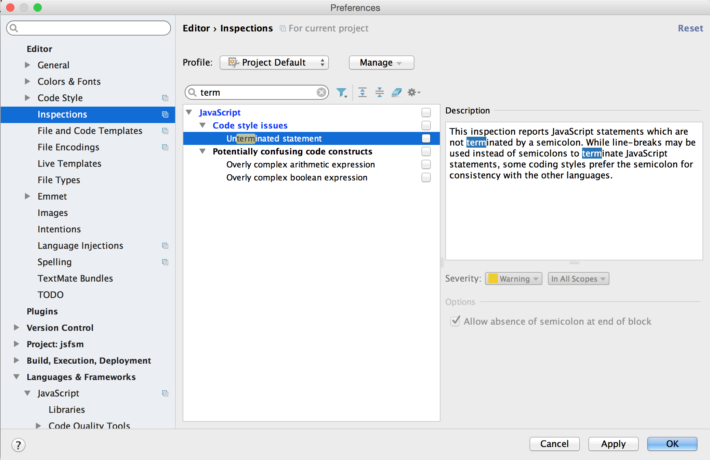
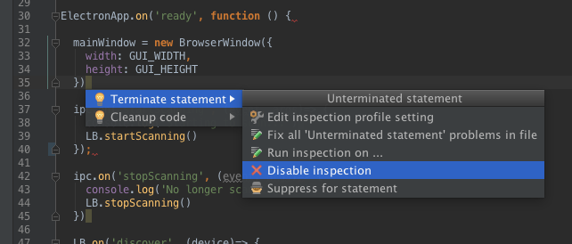

This style guide serves as a way to standardize JavaScript code we write at Punch Through Design.
If you can’t find an answer in here, use your best judgement and keep things readable. Strive for terse, readable code.
One style to rule them all. No decisions to make. It just works.
Use the Javascript Standard Style.
Wondering what Standard looks like? Here’s an example file written with Standard.
Here’s a quick overview of the rules:
( or [if (condition) { ... }function name (arg) { ... }=== instead of == – but obj == null is allowed to check null || undefined.err function parameterwindow – except document and navigator are okayFrom the Standard homepage:
The whole point of standard is to avoid bikeshedding about style. There are lots of debates online about tabs vs. spaces, etc. that will never be resolved. These debates just distract from getting stuff done. At the end of the day you have to ‘just pick something’, and that’s the whole philosophy of standard – its a bunch of sensible ‘just pick something’ opinions. Hopefully, users see the value in that over defending their own opinions.
Use ESLint in your projects. Enforcing style with ESLint means that WebStorm will automatically pick up on your style settings and yell at you when you make mistakes.
If you install Sublime Linter, you can get the same experience in Sublime too.
npm install -g eslint eslint-config-standard eslint-plugin-standard
Put the following into a file named .eslintrc into the root of each of your JS projects:
{
"extends": "standard"
}
In your project directory:
eslint my-file.js some-src-dir
Enable ESLint in Webstorm Preferences:
Preferences > Languages & Frameworks > JavaScript > Code Quality Tools > ESLint

By default, WebStorm will complain about missing semicolons at the end of a line. To turn that off, go to WebStorm Preferences:
Preferences > Editor > Inspections > JavaScript

Or highlight a missing semicolon error, press Option+Return to bring up the Quick Fix menu, and disable the inspection there:
